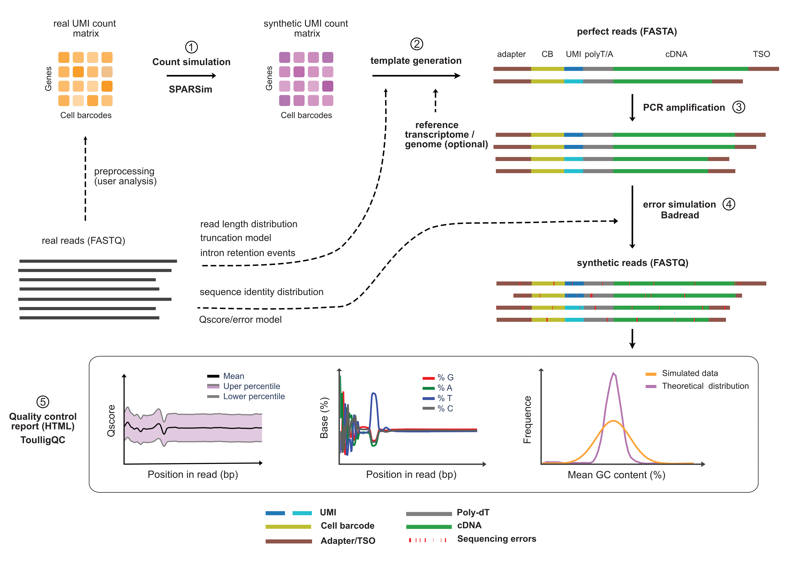

AsaruSim
AsaruSim derives from the Amazigh word Asaru (ⴰⵙⴰⵔⵓ ) which can mean "pipeline" or "channel".
AsaruSim is an automated Nextflow workflow designed for simulating 10x single-cell Nanopore data from the count matrix level to the sequence level. It aimed at creating a gold standard dataset for the assessment and optimization of single-cell long-read methods.
Five major steps are implemented :
(1) - Simulation of a synthetic UMI count matrix.
(2) - Generation of perfect raw reads.
(3) - Amplification of the perfect reads.
(4) - Generation of realistic synthetic reads by adding errors to mimic real reads.
(5) - Production of a report with quality control values and plots calculated on the resulting synthetic reads.

Contributing
Contributions are more than welcome. See the git repository page.
License
AsaruSim is released under the GPL 3.0 license.
Citations
If you use AsaruSim in your work, please cite us.